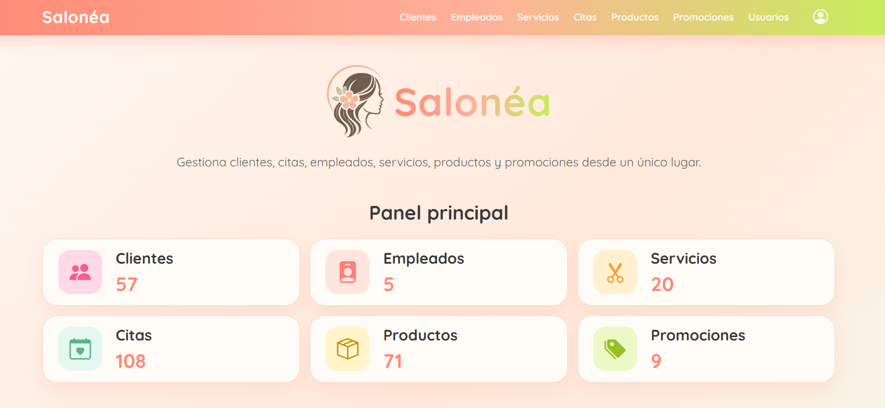
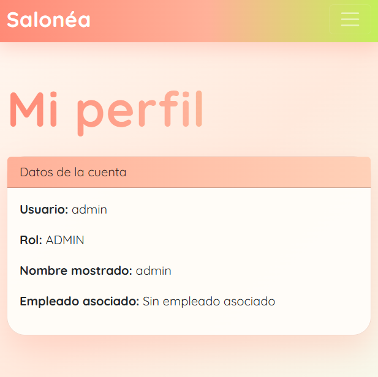
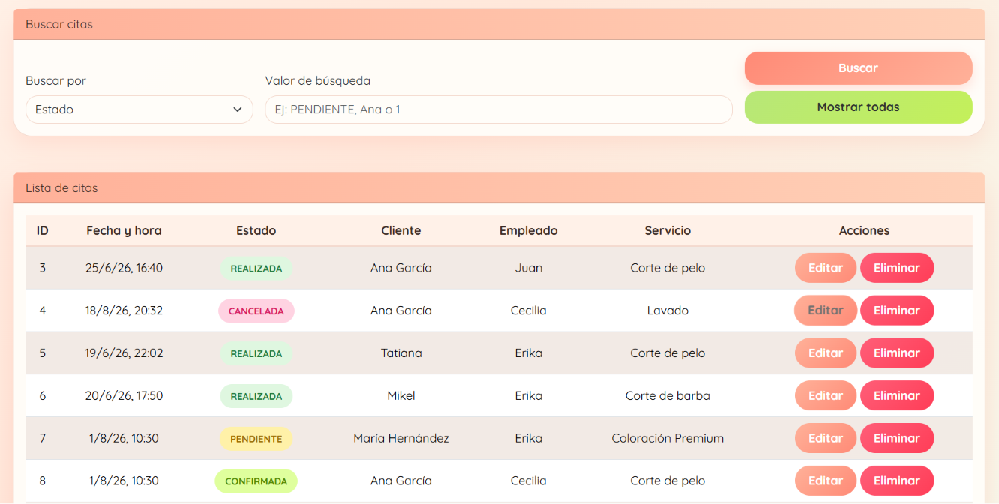

Salonéa
Aplicación web full-stack para gestionar el día a día de una peluquería.
Salonéa es un sistema desarrollado con Java, Spring Boot y Angular para gestionar clientes, citas, empleados, servicios, productos, promociones y usuarios.
El proyecto incluye una API REST, base de datos PostgreSQL, autenticación con Spring Security y un frontend desarrollado con Angular, TypeScript y Bootstrap.
Gestión principal
Salonéa centraliza la gestión de un salón de peluquería en una única aplicación. Desde el panel principal es posible acceder a los distintos módulos y gestionar la información relacionada con cada uno de ellos.
- Clientes.
- Empleados.
- Servicios.
- Productos.
- Promociones.
- Citas.

Autenticación y roles
Salonéa incorpora un sistema de autenticación desarrollado con Spring Security que permite controlar el acceso a la aplicación según el rol de cada usuario.
- Registro e inicio de sesión.
- Autenticación mediante Spring Security.
- Control de acceso según el rol del usuario.
- Gestión y edición del perfil.

Gestión de citas y agenda
El módulo de citas permite gestionar la agenda del salón relacionando clientes, empleados y servicios en una única reserva.
- Creación, edición y eliminación de citas.
- Asignación de cliente, empleado y servicio.
- Búsqueda y filtrado de citas.
- Estados: pendiente, confirmada, cancelada y realizada.

Arquitectura del proyecto
La aplicación sigue una arquitectura por capas que separa el frontend, el backend y la base de datos, facilitando la organización y el mantenimiento del proyecto.
- Frontend: Angular, TypeScript, HTML, CSS y Bootstrap.
- Backend: Java con Spring Boot.
- Base de datos: PostgreSQL.
- Persistencia: Spring Data JPA e Hibernate.
- Seguridad: Spring Security.
- Comunicación: API REST mediante peticiones HTTP entre Angular y Spring Boot.
Retos técnicos y aprendizaje
El desarrollo de Salonéa permitió aplicar conceptos de desarrollo full-stack, seguridad, persistencia de datos y comunicación entre frontend y backend.
- Creación de una API REST con Spring Boot.
- Desarrollo del frontend con Angular y TypeScript.
- Diseño de entidades relacionadas mediante JPA/Hibernate.
- Uso de DTOs para la comunicación entre frontend y backend.
- Implementación de autenticación y autorización con Spring Security.
- Consumo de la API REST desde Angular mediante HttpClient.
- Organización de un proyecto full-stack siguiendo una arquitectura por capas.